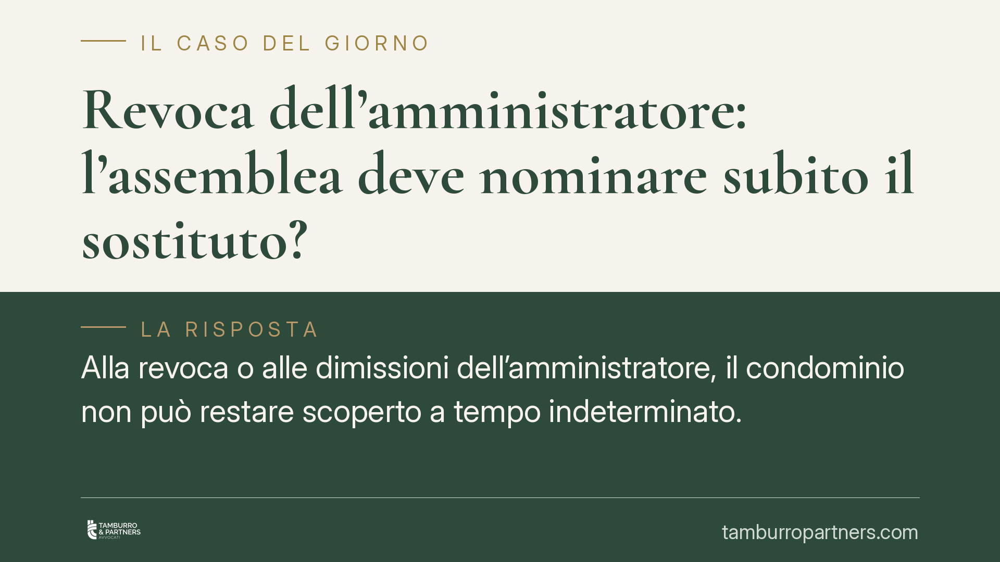

Revoca dell'amministratore: l'assemblea deve nominare subito il sostituto?
Alla revoca o alle dimissioni dell'amministratore, il condominio non può restare scoperto a tempo indeterminato. L'amministratore cessato è tenuto ad attività urgenti, ma la gestione protratta nel tempo non è gratuita. Capire il confine tra atti urgenti e amministrazione ordinaria evita contenziosi sui compensi e responsabilità dell'assemblea inerte.

Il problema: il condominio senza amministratore
Quando l'amministratore viene revocato o rassegna le dimissioni, si apre una fase delicata. Il condominio non può restare privo di gestione: la riscossione degli oneri, i rapporti con fornitori e utenze, gli adempimenti fiscali richiedono continuità.
La domanda ricorrente è duplice. Da un lato: l'assemblea deve nominare subito il nuovo amministratore? Dall'altro: l'amministratore uscente che continua a operare nel frattempo lavora gratis o ha diritto a un compenso?
Cosa dice la norma
Il riferimento è l'art. 1129 del codice civile. Il comma 8 stabilisce che, alla cessazione dell'incarico, l'amministratore è tenuto alla consegna di tutta la documentazione in suo possesso relativa al condominio e ai singoli condomini, oltre a eseguire le attività urgenti al fine di evitare pregiudizi agli interessi comuni, senza diritto a ulteriori compensi.
È importante leggere questa previsione con precisione. La norma circoscrive l'attività gratuita post-incarico a ciò che è urgente e indifferibile: non copre, nel suo tenore testuale, una gestione ordinaria protratta nel tempo come se l'incarico proseguisse.
Il comma 10 fissa la durata dell'incarico in un anno, con rinnovo tacito per un ulteriore anno. È una disposizione sulla durata del mandato, non una regola che qualifichi come gratuita qualsiasi attività transitoria.
La distinzione che conta: atti urgenti e gestione ordinaria
Su questo punto si colloca l'orientamento che distingue due piani.
Il primo è quello degli atti urgenti: interventi necessari a evitare danni immediati al condominio (una perdita d'acqua, una scadenza fiscale imminente, un pagamento indifferibile). Qui opera la regola del comma 8: l'amministratore cessato deve compierli, senza compenso aggiuntivo.
Il secondo piano è quello della gestione ordinaria protratta. Se l'assemblea resta inerte e l'amministratore uscente continua di fatto ad amministrare per settimane o mesi, svolgendo un'attività che eccede l'urgenza, viene meno il fondamento della gratuità. In questi casi la giurisprudenza tende a riconoscere un diritto al compenso, che trova fondamento negli istituti della gestione di affari altrui (art. 2028 e ss. c.c.) o dell'ingiustificato arricchimento (art. 2041 c.c.), a seconda delle circostanze concrete.
In altri termini: l'obbligo gratuito copre il "ponte" verso la nuova nomina, non la sostituzione stabile di un'assemblea che non provvede.
> Nota sulle fonti: su questo tema esiste un orientamento di legittimità. Chi intenda agire o difendersi in giudizio deve far verificare al proprio difensore gli estremi esatti della pronuncia applicabile al caso concreto, poiché l'esito dipende dalla ricostruzione fattuale.
Implicazioni pratiche
Per il condominio, il messaggio è chiaro: l'inerzia ha un costo. Un'assemblea che tarda nella nomina del sostituto rischia non solo la paralisi gestionale, ma anche di dover riconoscere un compenso per l'attività svolta dall'amministratore uscente oltre la soglia dell'urgenza.
Per l'amministratore cessato, la ricaduta è speculare: continuare a gestire senza una formale proroga o una nuova investitura non equivale a un incarico retribuito automatico, ma le attività che eccedono l'urgenza possono fondare una pretesa economica da documentare con cura.
Per i singoli condomini, il rischio concreto è la gestione scoperta: ritardi nei pagamenti comuni, contestazioni dei fornitori, adempimenti fiscali mancati. Tutti profili che possono tradursi in responsabilità e maggiori oneri.
Cosa fare in concreto
- Convocare l'assemblea tempestivamente. Alla notizia della revoca o delle dimissioni, inserire all'ordine del giorno la nomina del nuovo amministratore senza rinvii.
- Formalizzare il passaggio di consegne. Pretendere la consegna documentale prevista dall'art. 1129, comma 8, con un verbale che elenchi ciò che viene trasferito.
- Delimitare per iscritto il perimetro dell'uscente. Chiarire quali attività resta chiamato a compiere in via urgente, per evitare incertezze sul confine con la gestione compensabile.
- Documentare ogni attività svolta nella fase transitoria. Sia il condominio sia l'amministratore hanno interesse a una tracciabilità precisa di interventi, date e importi.
- Richiedere un parere prima di contestare compensi. La qualificazione tra atto urgente e gestione ordinaria è caso per caso: una valutazione preventiva riduce il rischio di liti.
---
Contributo informativo a cura di Tamburro & Partners - Avv. Giuseppe Tamburro. Non costituisce parere legale.
Ogni condominio ha una storia a sé.
Se gestisci un'amministrazione e vuoi un confronto su una specifica questione condominiale, scrivi allo studio. Ti rispondiamo entro un giorno lavorativo.